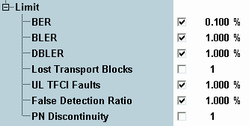

Limit Settings
The limit section defines upper limits for the results of the "BER" measurement.
3GPP TS 34.121 specifies various test cases related to these results, especially to BER, BLER and FDR. A maximum BER of 0.1% is required for most test cases.

Limit settings
Defines and activates/deactivates individual upper limits for the results of the "BER" measurement.
Remote command: